1. Prima di cominciare
1.1 Che cos'è il Sistema Consegne
Il Sistema Consegne tiene le consegne del reparto: una scheda per ogni letto, uguale su tutti i PC. Sostituisce il foglio delle consegne e lo tiene sempre aggiornato.
- Quello che scrivi su un PC compare sugli altri dopo pochi secondi, senza bisogno di ricaricare la pagina.
- Ogni scheda ha le colonne «Diagnosi», «Problemi attivi», «Esami», «Da fare», «Diaria ed epicrisi» e «Note e terapia».
- Il programma salva da solo mentre scrivi, quindi non c'è un pulsante «Salva» da ricordarsi.
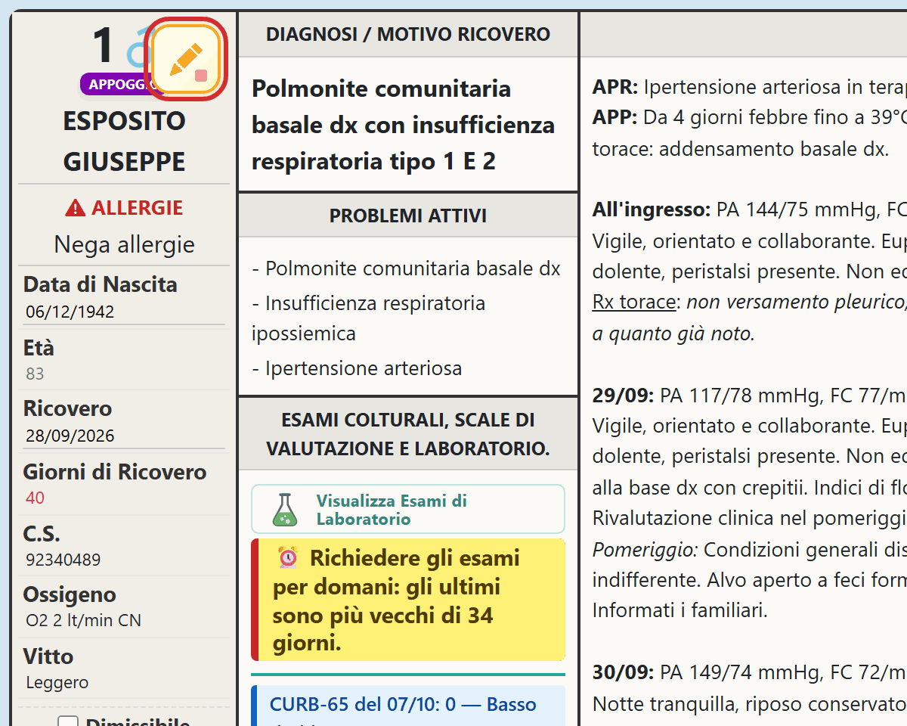
1.2 Da dove si apre
Il programma si apre dal browser, sui PC del reparto e anche dal telefono: non c'è nulla da installare.
- Apri il segnalibro delle consegne che trovi nel browser del reparto: ti porta da solo all'indirizzo giusto.
- Dal telefono funziona allo stesso modo; il menu si apre con il pulsante a tre righe in alto.
Attenzione: non salvare la pagina in altri modi. Usa sempre il segnalibro, che porta sempre all'indirizzo in uso.
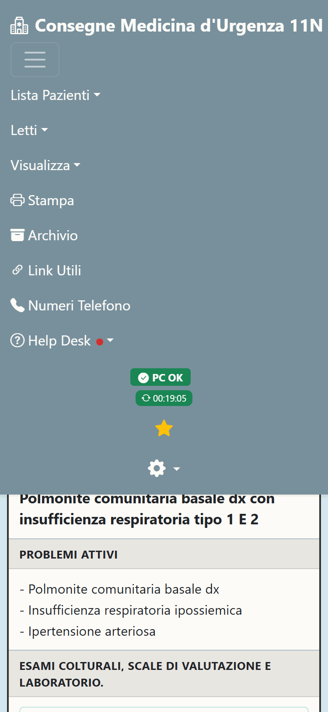
1.3 Entrare: «Accedi con Google»
Per entrare si usa il proprio account Google, se è fra gli «Account abilitati», oppure l'account del reparto. Lo si fa una volta per ogni dispositivo: poi resta collegato.
- Premi «Accedi con Google»: si apre la scelta dell'account.
- Scegli il tuo account abilitato, oppure l'account del reparto scritto sopra il pulsante.
- Le consegne compaiono da sole, e la volta dopo il dispositivo è già collegato.
Attenzione: un account che non è fra gli abilitati viene rifiutato; per aggiungerlo serve un amministratore (12.6).
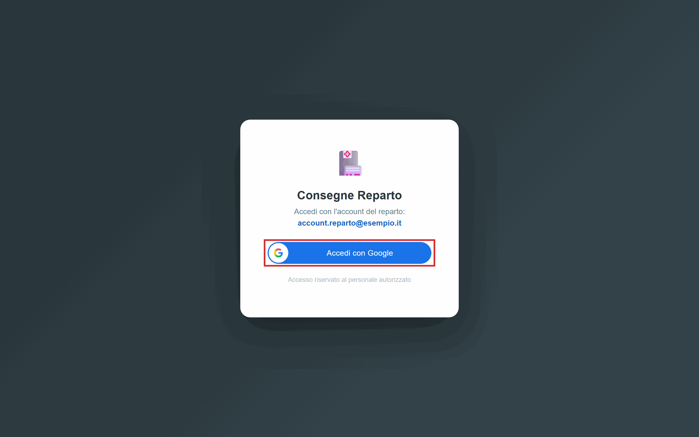
1.4 La schermata principale
In alto c'è la barra dei menu, e sotto le schede dei letti, una dopo l'altra. Da qui parte tutto il lavoro.
- A sinistra ci sono i menu «Lista Pazienti», «Letti», «Visualizza», «Stampa», «Archivio» e «Link Utili».
- «Numeri Telefono» apre la rubrica dell'ospedale (capitolo 8).
- «Help Desk» serve a segnalare un problema e apre anche questo manuale (capitolo 11).
- A destra ci sono la spia «PC OK», l'ora dell'ultimo aggiornamento e la rotellina delle impostazioni.
- Se tocchi il nome delle consegne, in alto a sinistra, la pagina rilegge subito i dati.
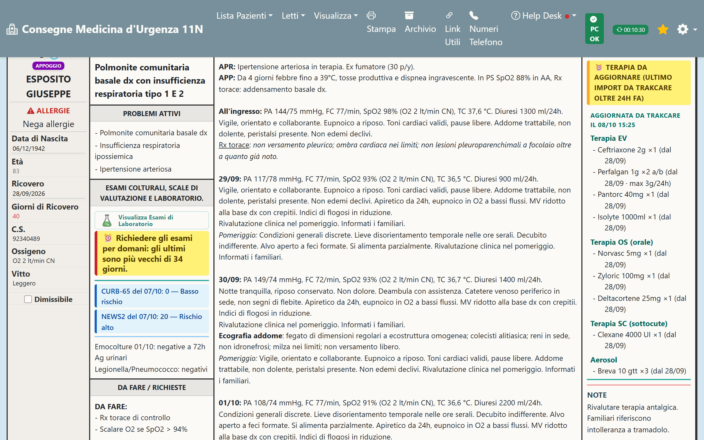
1.5 «Lista Pazienti»
«Lista Pazienti» mostra tutti i letti con il paziente e la tipologia, e ti porta subito alla scheda giusta senza scorrere la pagina.
- Premi «Lista Pazienti» nella barra in alto: si apre l'elenco dei letti.
- Tocca un letto: la pagina scorre fino alla sua scheda.
Le icone accanto al nome dicono se il paziente è in isolamento, in dimissione o ha indicazioni di rianimazione.
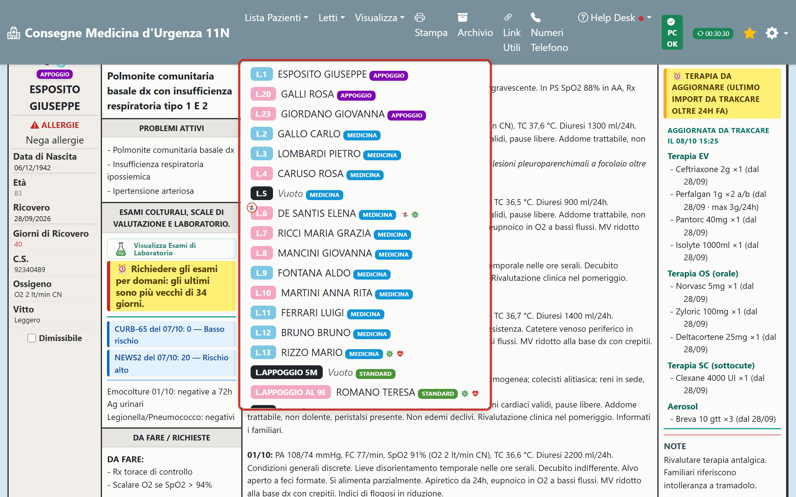
1.6 Il riepilogo dei letti
Il riepilogo conta i letti per sesso, per tipologia e per stato: serve a sapere in un colpo d'occhio come è messo il reparto.
- Premi «Letti» nella barra in alto: si apre il menu dei letti.
- In fondo, sotto «Riepilogo Letti», leggi i conti: letti vuoti, in dimissione, in isolamento e con note di rianimazione.
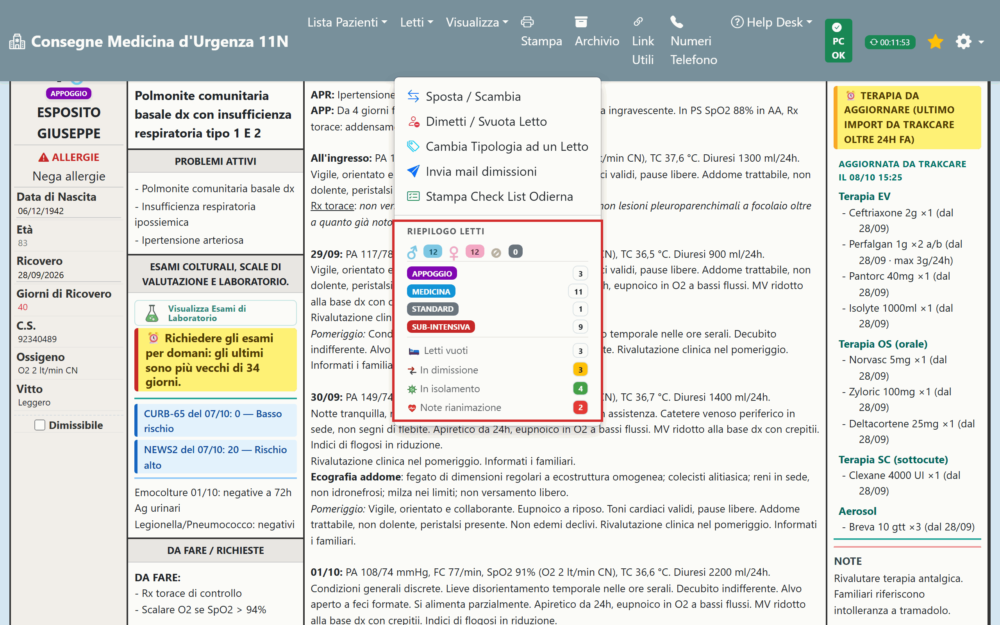
1.7 Che versione ho?
La versione dice quale aggiornamento del programma sta usando il tuo PC. Serve soprattutto quando segnali un problema.
- Premi la rotellina in alto a destra: si apre il menu delle impostazioni.
- In fondo al menu leggi «Versione applicazione»: è un numero, per esempio 213.
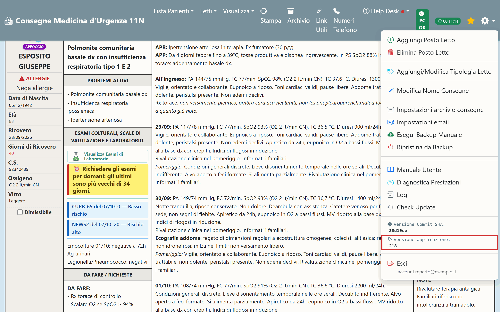
1.8 Le finestre non si chiudono per sbaglio
Molte funzioni si aprono in una finestra sopra la pagina. Il programma fa in modo che una finestra non si chiuda mentre ci stai lavorando.
- In molte finestre un clic sullo sfondo scuro, fuori dalla finestra, la chiude: la pagina sotto torna come prima.
- Se premi il mouse dentro la finestra, per esempio per selezionare un testo, e lo rilasci fuori, la finestra resta aperta con tutto quello che hai scritto. Vale anche col dito.
- Se nella finestra hai scritto qualcosa che non hai ancora salvato, il clic fuori non la chiude: la chiudi tu coi suoi pulsanti, così decidi se salvare o lasciar perdere.
2. Scrivere nelle schede
2.1 Aprire una scheda in modifica
Le schede si leggono sempre, ma per scriverci bisogna aprirle in modifica. Così nessuno cambia una scheda per sbaglio.
- Passa con il mouse sulla scheda: accanto al numero del letto compare la matita gialla.
- Premi la matita: la scheda si apre a tutto schermo, con una barra di pulsanti in ogni colonna.
- Scrivi nelle colonne come in un documento; il testo si salva da solo.
- Per chiudere tocca fuori dalla scheda, nella parte scura: la scheda torna al suo posto.
Attenzione: dopo 5 minuti senza toccare nulla la scheda si chiude e salva da sola.
Nome, allergie, date, codice sanitario e sesso stanno nella colonna di sinistra: vedi da 2.10 a 2.13.
2.2 Il salvataggio
Quello che scrivi si salva da solo, pochi secondi dopo che hai smesso di scrivere, e arriva subito agli altri PC.
- Il dischetto in alto a sinistra della scheda aperta è «Salva ora»: premilo e il testo si salva subito.
- Quando chiudi la scheda, il programma salva comunque le ultime modifiche.
Attenzione: non chiudere il browser mentre stai ancora scrivendo; prima chiudi la scheda, così il salvataggio arriva a destinazione.
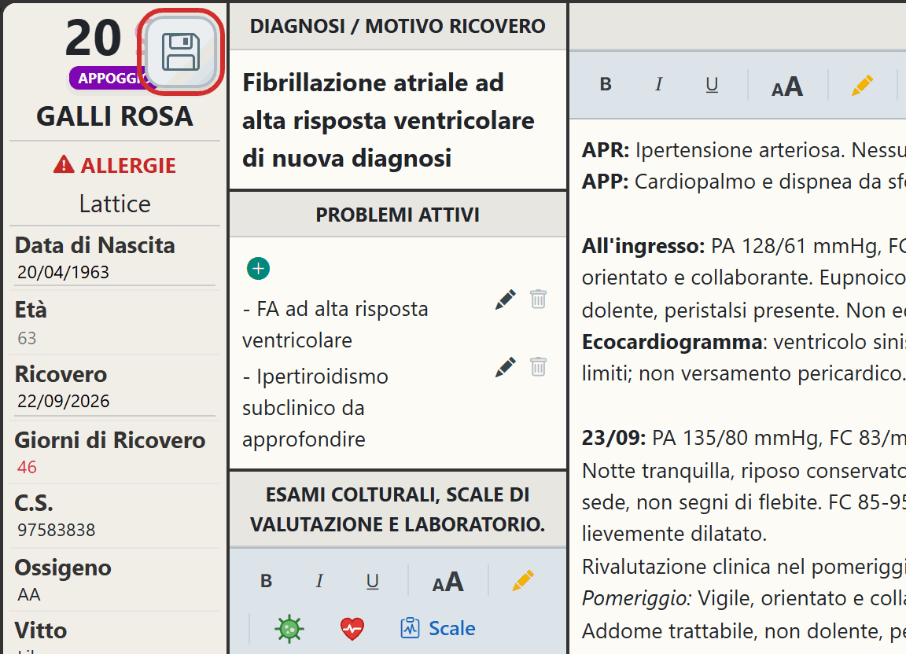
2.3 Quando un collega sta scrivendo
Una scheda la modifica un PC alla volta: così due colleghi non si cancellano il lavoro a vicenda.
- Se un altro PC ha la scheda aperta, sugli altri compare «In aggiornamento» con il lucchetto, e la matita non c'è.
- Aspetta che il collega chiuda la scheda: il lucchetto sparisce da solo e puoi aprirla tu.
- Se il collega se ne dimentica, dopo 10 minuti senza modifiche la scheda torna libera.
2.4 Grassetto, corsivo, sottolineato, dimensione, evidenzia
Questi pulsanti mettono in risalto una parte del testo, per esempio una cosa urgente da fare.
- Con la scheda aperta, seleziona la parola o la frase.
- Nella barra della colonna premi B (grassetto), I (corsivo) o U (sottolineato): il testo selezionato cambia subito.
- «AA» cambia la dimensione del testo; l'evidenziatore giallo colora lo sfondo, e «Rimuovi evidenziazione» lo toglie.
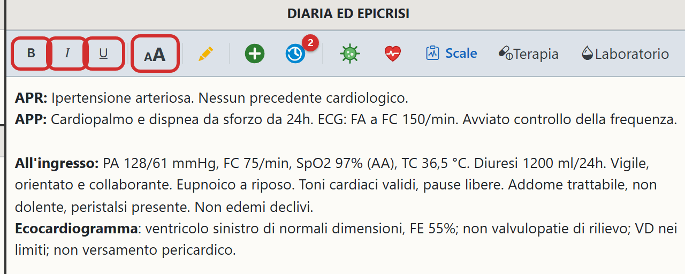
2.5 «Aggiungi data odierna»
Questo pulsante scrive la data di oggi dove si trova il cursore, così ogni nota ha il suo giorno.
- Metti il cursore dove vuoi scrivere.
- Premi il «+» verde nella barra della colonna: compare la data in grassetto, per esempio «05/11:».
- In «Esami» e «Da fare» compare anche una casella: spuntala quando la cosa è fatta.
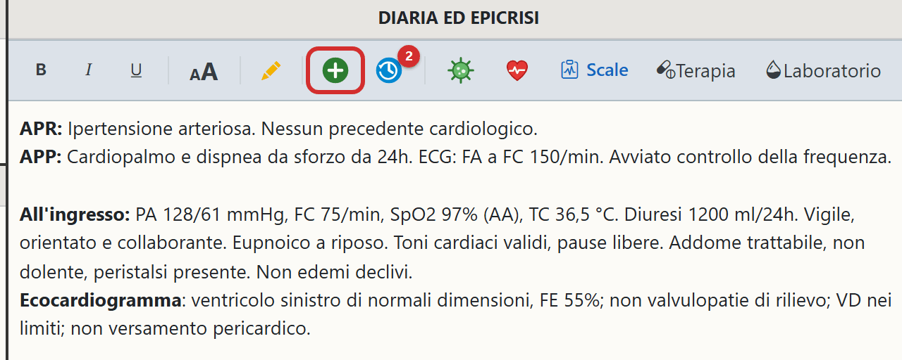
2.6 Recuperare un testo perso
Se hai cancellato qualcosa per sbaglio, puoi riprendere una copia della scheda fatta poco prima. Le copie stanno su questo PC.
- Con la scheda aperta premi l'orologio blu, «Recupera dati da snapshot precedente»: si apre «Recupero dati».
- Scorri le copie salvate: ognuna ha giorno e ora.
- Premi «Ripristina questo snapshot» sulla copia giusta: la scheda torna com'era in quel momento. «Annulla» chiude senza cambiare nulla.
Attenzione: il ripristino sostituisce il testo attuale della scheda con quello della copia.
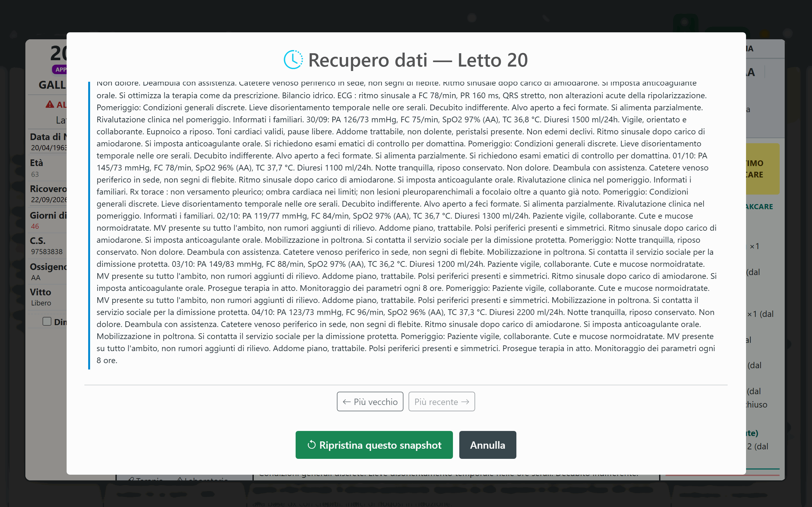
2.7 Isolamento
Segnala a tutti che il paziente è in isolamento, e di che tipo. Il segno si vede sulla scheda e nella «Lista Pazienti».
- Con la scheda aperta premi l'icona verde del virus nella barra della «Diaria».
- Scrivi il tipo, per esempio «da contatto» o «droplet», e premi «Attiva isolamento».
- In cima alla «Diaria» compare il riquadro dell'isolamento, e accanto al numero del letto il virus.
- Per toglierlo, tocca il riquadro con la scheda aperta e conferma.
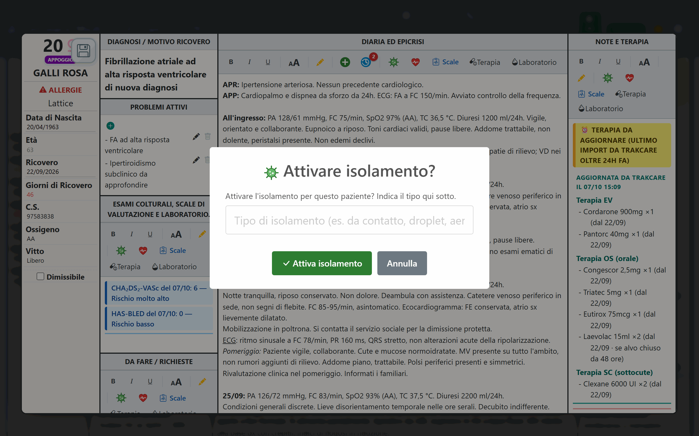
2.8 Indicazioni di rianimazione
Annota se il paziente è da rianimare oppure no, con le eventuali note, in modo che chiunque apra la scheda lo veda subito.
- Con la scheda aperta premi il cuore rosso nella barra della «Diaria».
- Scrivi l'indicazione, per esempio «DA RIANIMARE» oppure «NON RIANIMARE (DNR)».
- Premi «Salva»: l'indicazione resta in cima alla «Diaria» e compare nella «Lista Pazienti».
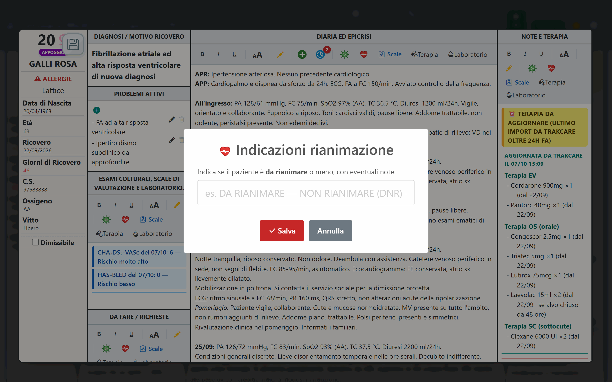
2.9 «Dimissibile»
Segna il paziente in dimissione, con la data prevista. Serve a chi organizza i letti e compare nel riepilogo.
- Con la scheda aperta tocca la casella «Dimissibile», sotto i dati del paziente: si apre «Imposta data di dimissione».
- Scrivi la data in qualsiasi forma (150526, 15/05/26…) oppure una parola come «possibile».
- Premi «Conferma»: la data compare nella scheda e il paziente entra fra le dimissioni del riepilogo dei letti.
Lo stesso paziente si può includere nella mail di dimissione (7.1).
Attenzione: con la scheda chiusa la casella non si cambia, e il programma te lo ricorda.
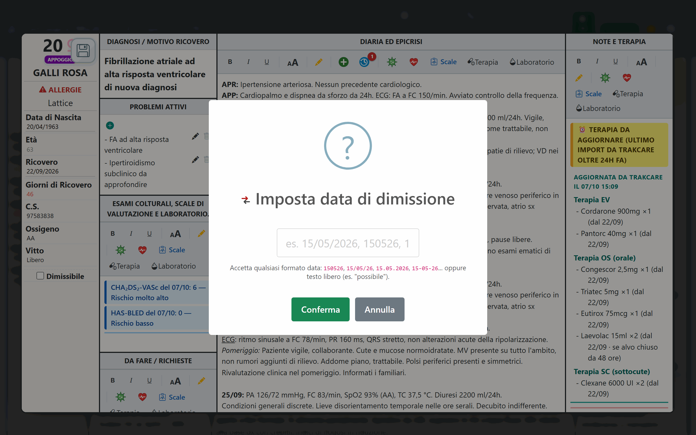
2.10 Nome e allergie
I dati del paziente stanno nella colonna di sinistra della scheda, sotto il numero del letto. Si scrivono come gli altri campi, a scheda aperta.
- Apri la scheda in modifica (2.1).
- Sotto il numero del letto scrivi cognome e nome come in TrakCare, per esempio «ROSSI MARIO».
- Sotto «Allergie» scrivi le allergie note, oppure «Nega allergie»: il testo si salva da solo.
Attenzione: l'importazione da TrakCare controlla che il nome sia lo stesso di TrakCare (capitolo 5).
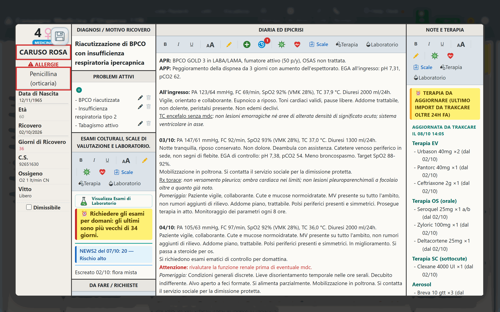
2.11 Data di nascita ed età
Dalla data di nascita il programma calcola l'età da solo, così non va aggiornata a mano.
- A scheda aperta tocca «Data di Nascita» e scrivi solo le cifre: le barre si mettono da sole (12111965 diventa 12/11/1965).
- Va bene anche l'anno a due cifre (121165).
- Esci dal campo: l'età si calcola da sola, e da quel momento non si cambia a mano.
Senza data di nascita l'età si può scrivere a mano. Una data che non esiste diventa rossa, con il motivo.
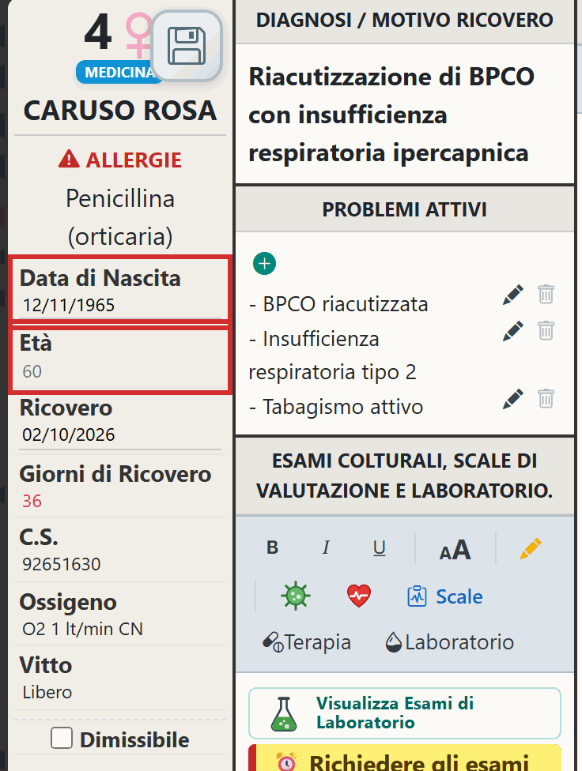
2.12 Ricovero, codice sanitario, ossigeno e vitto
Questi campi completano i dati del paziente. Si scrivono a scheda aperta e si salvano da soli (2.2).
- In «Ricovero» scrivi la data del ricovero, come quella di nascita: «Giorni di Ricovero» si conta da solo.
- In «C.S.» scrivi il codice sanitario del paziente.
- In «Ossigeno» scrivi per esempio «CN 4 lt/min», e in «Vitto» per esempio «completo», «diabetico» o «senza scorie».
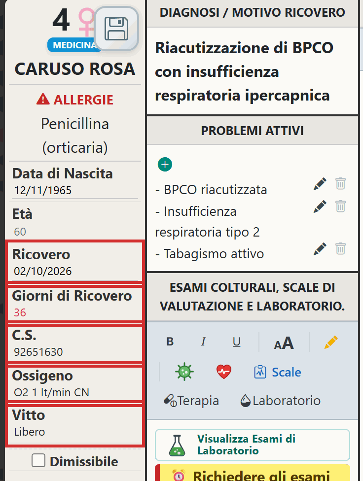
2.13 Il sesso del paziente
L'iconcina accanto al numero del letto dice il sesso del paziente. Conta nel riepilogo dei letti (1.6) e colora il numero del letto in «Lista Pazienti».
- Apri la scheda in modifica.
- Clicca sull'iconcina accanto al numero del letto: a ogni clic passa a maschio (♂ azzurro), femmina (♀ rosa), niente (⊘ grigio), e poi di nuovo da capo.
«Niente» è lo stato di partenza: un letto svuotato (4.1) torna sempre a «niente».
Attenzione: con la scheda chiusa il clic sull'iconcina non fa nulla.
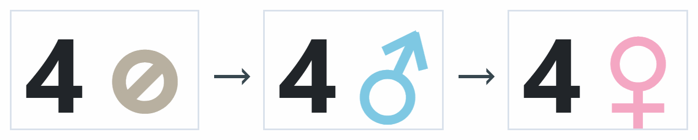
3. I Problemi Attivi
3.1 Aggiungere un problema
«Problemi attivi» è un elenco puntato dei problemi del paziente. Si riempie solo con i pulsanti, così resta sempre in ordine e leggibile.
- Apri la scheda in modifica.
- Nella colonna «Problemi attivi» premi il «+» verde: si apre «Nuovo problema attivo».
- Scrivi il problema, per esempio «Scompenso cardiaco», e premi «Aggiungi»: compare in fondo all'elenco.
Attenzione: in questa colonna non si scrive a mano e non si incolla; usa sempre il «+».
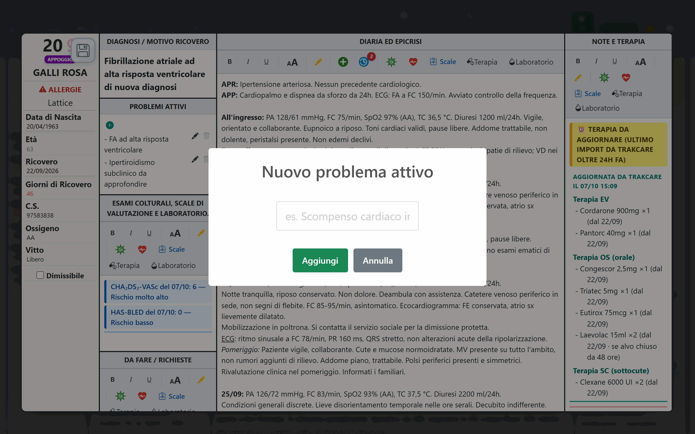
3.2 Modificare o togliere un problema
Ogni riga dell'elenco ha i suoi due pulsanti, per correggerla o toglierla quando il problema è risolto.
- Apri la scheda in modifica.
- Accanto alla riga premi la matita per correggerla, oppure il cestino per toglierla.
- Conferma nella finestra che compare: l'elenco si aggiorna subito.
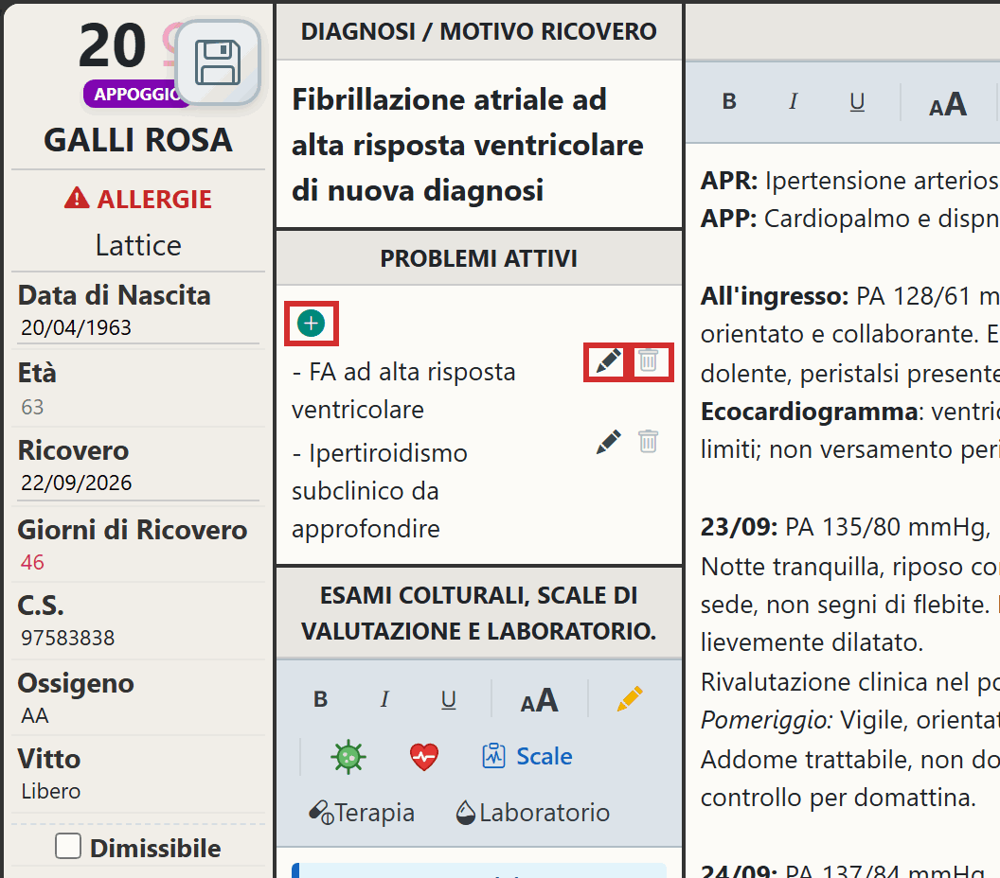
4. I letti
4.1 Dimettere o svuotare un letto
Quando il paziente va via, si libera il letto: la scheda si svuota ed è pronta per il paziente successivo.
- Apri il menu «Letti» e scegli «Dimetti / Svuota Letto».
- Scegli il letto e premi «Dimetti»: il programma chiede conferma.
- Premi «Sì, svuota»: la scheda resta vuota, pronta per un nuovo paziente.
Attenzione: il contenuto non si recupera dalla scheda; resta solo nei backup dell'«Archivio» (10.1).
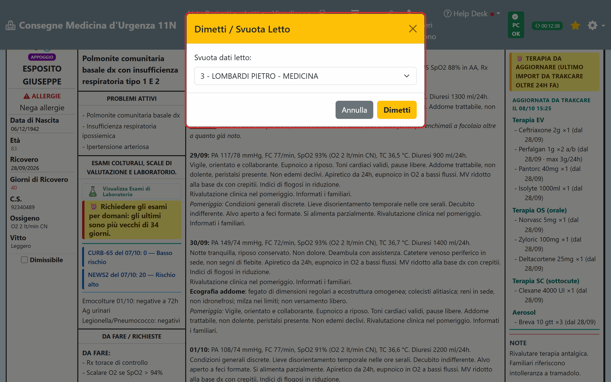
4.2 Spostare o scambiare due pazienti
Porta un paziente in un altro letto con tutta la sua scheda e i suoi esami, senza riscrivere nulla.
- Apri il menu «Letti» e scegli «Sposta / Scambia».
- Scegli il «Letto di Origine» e il «Letto di Destinazione», poi premi «Sposta».
- Se la destinazione è vuota, conferma con «Sì, sposta»: il paziente passa nel letto nuovo.
- Se è occupata, i due pazienti si scambiano di posto: conferma con «Sì, scambia».
Attenzione: se uno dei due letti è aperto in modifica su un altro PC, lo spostamento aspetta che si chiuda.
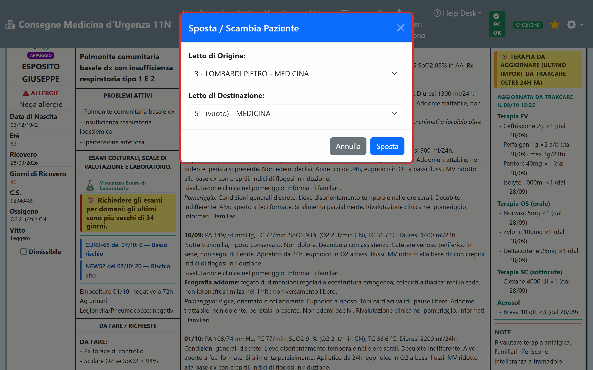
4.3 Cambiare la tipologia di un letto
La tipologia (per esempio «Medicina» o «Appoggio») dà il colore al letto e serve a ordinare e a stampare le consegne.
- Dal menu: «Letti» → «Cambia Tipologia ad un Letto», scegli il letto e la nuova tipologia, poi premi «Applica».
- Dalla scheda: aprila in modifica (2.1) e clicca sulla tipologia scritta sotto il numero del letto. Si apre la stessa finestra con il letto già scelto.
- Nel menu a tendina «Nuova Tipologia» scegli fra le tipologie configurate (4.5) e premi «Applica»: la scheda si chiude e salva da sola.
Attenzione: a scheda chiusa il clic sulla tipologia non fa nulla.
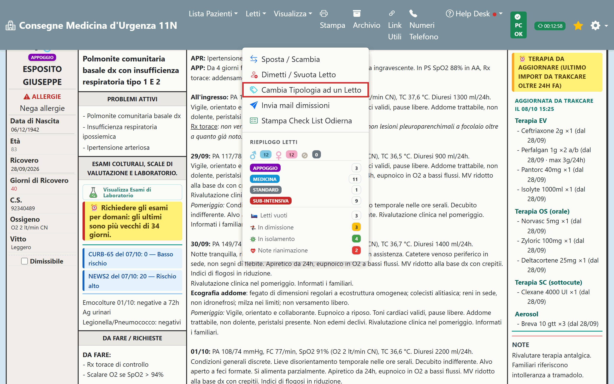
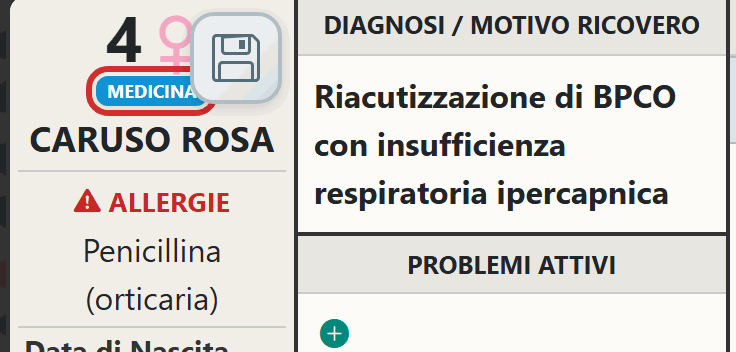
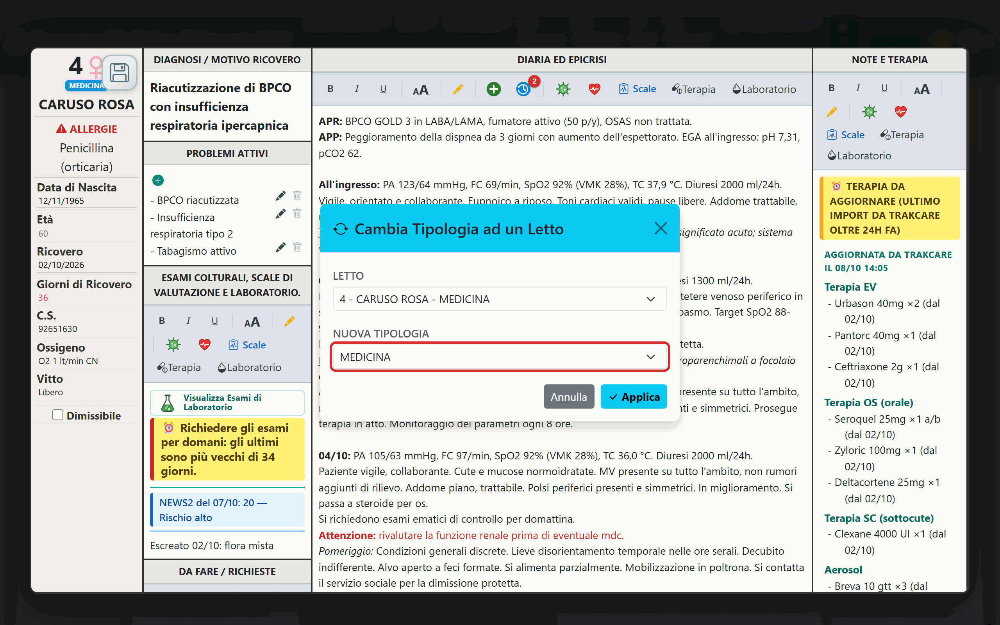
4.4 Aggiungere o eliminare un posto letto
Cambia il numero dei letti delle consegne, per esempio quando il reparto apre un letto in più.
- Rotellina → «Aggiungi Posto Letto»: scrivi il numero o il nome del letto e premi «Aggiungi», e la scheda nuova compare fra le altre.
- Rotellina → «Elimina Posto Letto»: scegli il letto, premi «Elimina» e poi «Sì, elimina».
Attenzione: eliminare un letto lo toglie del tutto, scheda compresa. Usalo solo per i letti che non ci sono più.
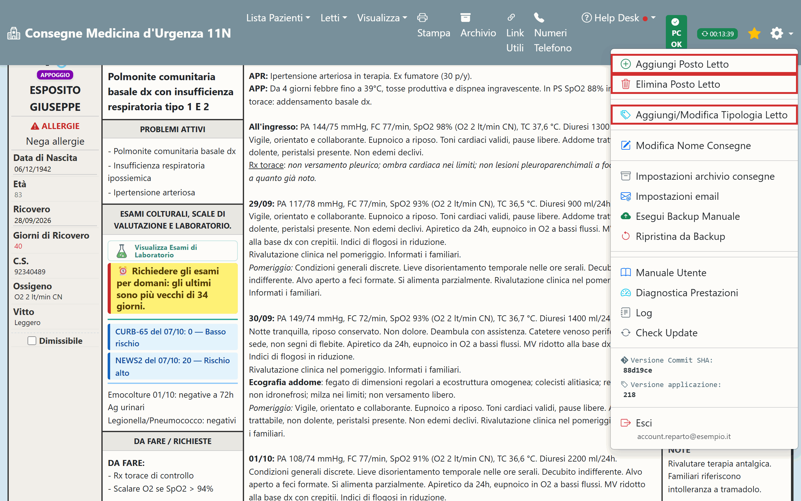
4.5 Le tipologie dei letti
Qui si crea una tipologia nuova, o si cambiano nome e colore a una che c'è già. Le tipologie valgono per tutti i PC.
- Rotellina → «Aggiungi/Modifica Tipologia Letto»: si apre l'elenco delle tipologie.
- Modifica le tipologie che ci sono, oppure premi «Aggiungi nuova tipologia».
- Premi «Salva modifiche»: i colori dei letti cambiano subito. Se chiudi senza salvare, il programma te lo chiede.
4.6 Ordinare i letti
Cambia l'ordine delle schede sullo schermo, per lavorare nell'ordine che ti torna più comodo.
- Apri il menu «Visualizza».
- Scegli «Numero Letto», «Ordine Alfabetico» oppure «Tipologia Letto»: le schede si riordinano subito.
L'ordine scelto vale anche per la stampa, ma solo su questo PC.
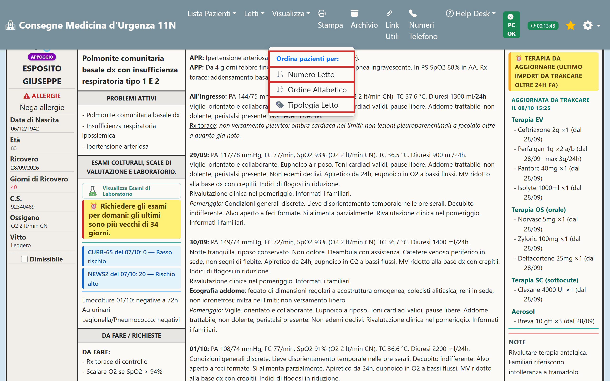
4.7 Il nome delle consegne
Il nome delle consegne è il titolo che compare in alto e nelle stampe.
- Rotellina → «Modifica Nome Consegne».
- Scrivi il nuovo nome e premi «Salva»: il titolo cambia su tutti i PC.
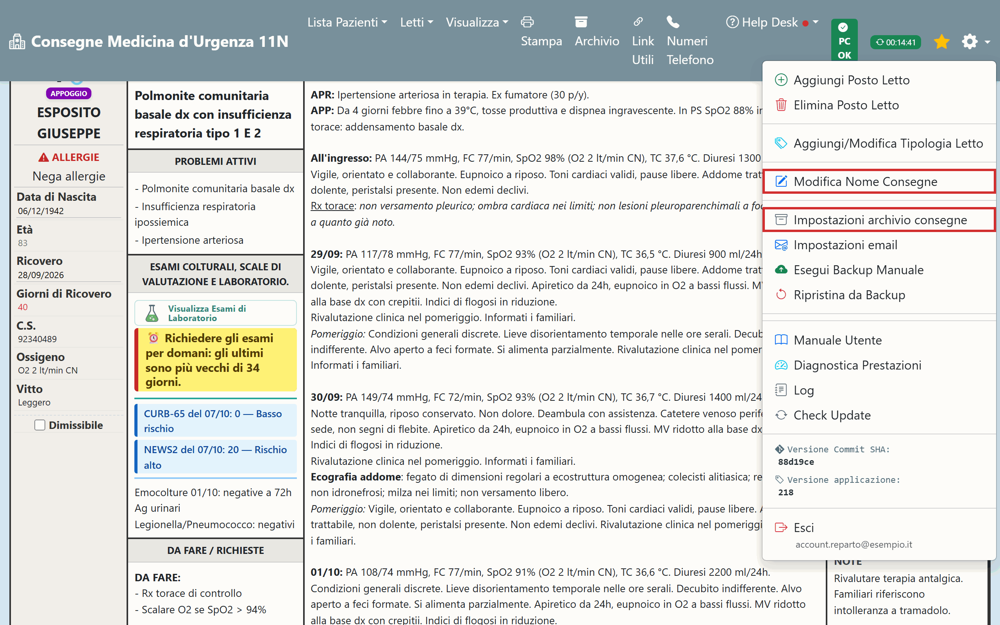
5. Dati da TrakCare
5.1 Il segnalibro «Prendi Terapia Trak»
«Prendi Terapia Trak» è un pulsante nella barra dei preferiti che legge la terapia da TrakCare. Si mette una volta per ogni PC.
- Se non vedi la barra dei preferiti, premi Ctrl + Maiusc + B: la barra compare sotto l'indirizzo.
- Apri una scheda in modifica e premi «Terapia»: se il pulsante non c'è ancora, la finestra te lo mostra.
- Trascina il pulsante verde «Prendi Terapia Trak» nella barra dei preferiti, dove resta.
Attenzione: se il programma ti chiede di trascinarlo di nuovo, fallo: il segnalibro vecchio non funziona più.
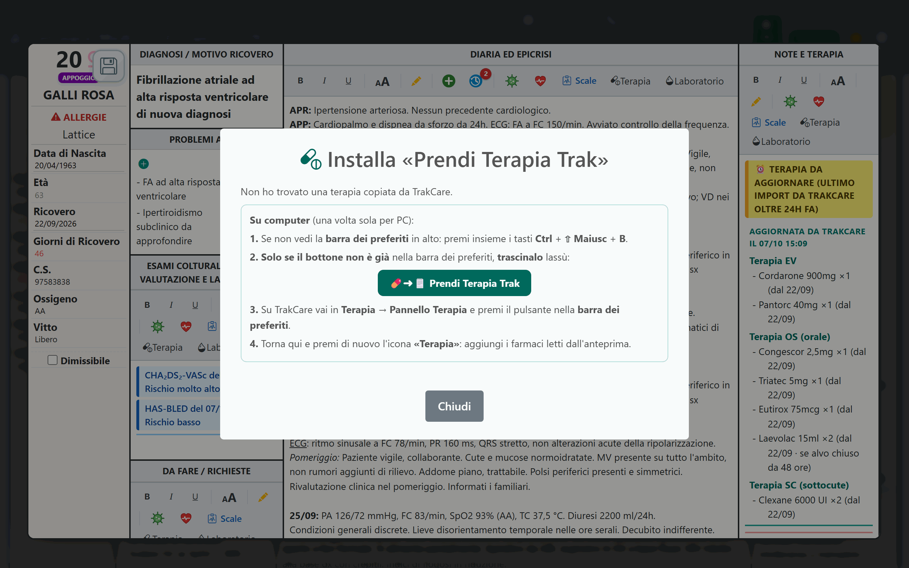
5.2 Importare la terapia
Copia nella colonna «Note e terapia» la terapia in corso su TrakCare, divisa per via (EV, OS, SC…), senza riscriverla a mano.
- Su TrakCare apri il paziente, poi «Terapia» → «Pannello Terapia».
- Premi «Prendi Terapia Trak» nella barra dei preferiti: il programma legge la terapia.
- Torna nelle consegne, apri la scheda dello stesso paziente e premi «Terapia»: compare l'anteprima.
- Controlla l'anteprima e conferma i farmaci da aggiungere: finiscono nella colonna «Note e terapia».
Attenzione: il programma controlla che il nome del paziente sia lo stesso. TrakCare resta il riferimento: la terapia nelle consegne è una copia.
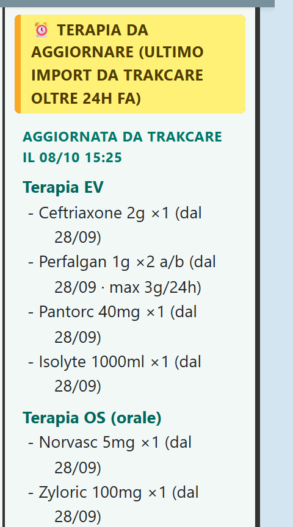
5.3 Gli esami: l'alambicco e il promemoria
Nella colonna degli esami di ogni scheda c'è il riquadro del laboratorio, che porta agli esami del paziente e ricorda quando richiederli.
- «Visualizza Esami di Laboratorio», con l'alambicco, apre la finestra degli esami del paziente.
- Il riquadro giallo «Richiedere gli esami per domani» compare quando gli ultimi esami sono vecchi: ricorda di richiederli.
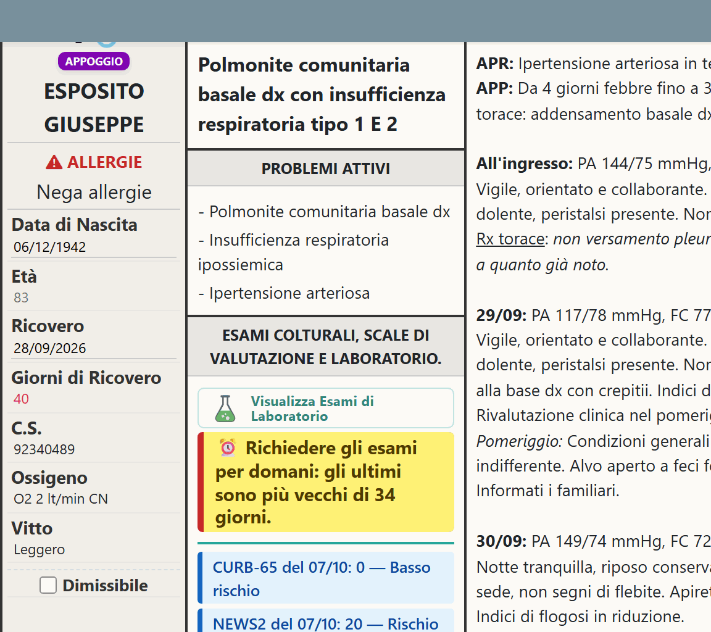
5.4 La finestra degli esami e i grafici
La finestra mostra tutti gli esami del paziente, giorno per giorno, con i valori fuori norma in rosso.
- Con la scheda aperta premi «Laboratorio», oppure l'alambicco: si apre la tabella degli esami.
- Cerca un esame con «Ricerca esame», in alto: la tabella mostra solo quello.
- Premi il piccolo grafico sotto il nome di un esame: si apre l'andamento nel tempo, e «Torna alla tabella» ti riporta indietro.
- «Selezione multipla» mette più esami a confronto in un grafico solo.
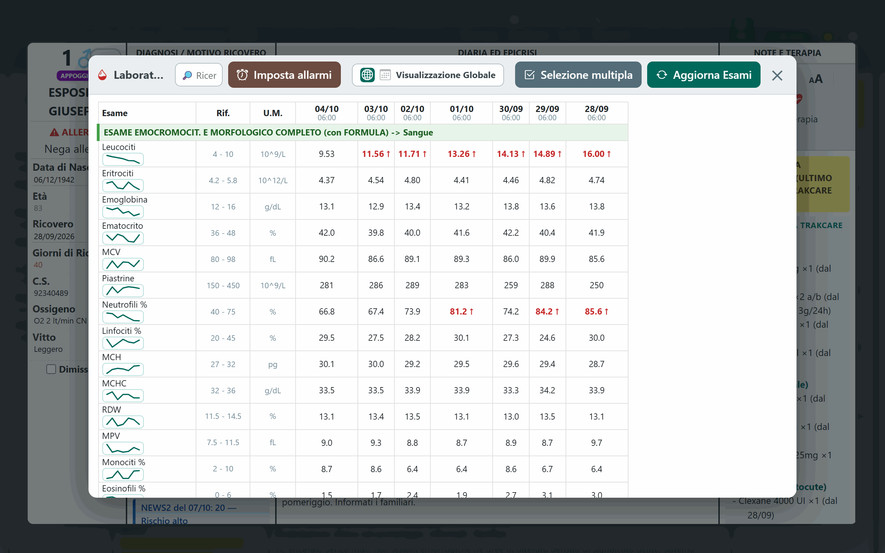
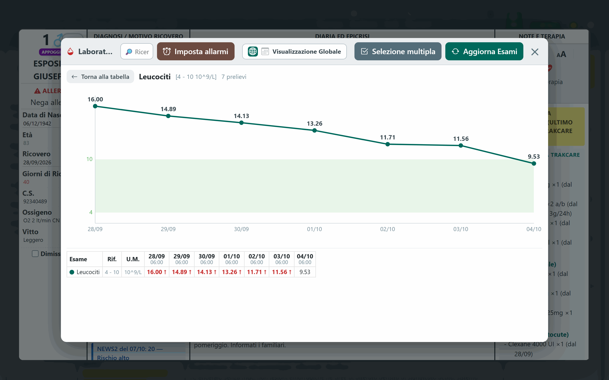
5.5 Importare gli esami
Copia gli esami da TrakCare con il segnalibro «Prendi Esami Trak», così la tabella è completa senza ricopiare i valori.
- La prima volta trascina «Prendi Esami Trak» nella barra dei preferiti: lo mostra la finestra degli esami.
- Su TrakCare apri il paziente e vai in «Laboratorio».
- Premi il pulsante nella barra dei preferiti e aspetta il messaggio «Esami copiati».
- Torna nelle consegne e premi «Aggiorna Esami»: gli esami nuovi entrano nella tabella.
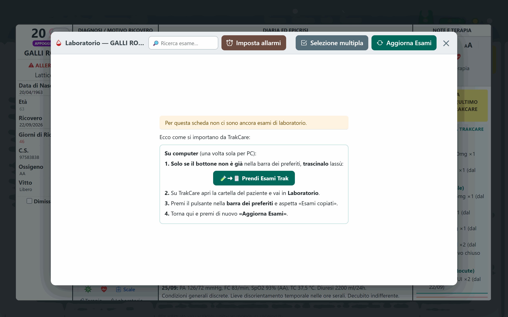
5.6 «Imposta allarmi»
Decide dopo quanti giorni senza esami compare il promemoria per richiederli, letto per letto.
- Nella finestra degli esami premi «Imposta allarmi».
- Scegli i giorni (1, 2, 3, 5, 7 o un altro numero) e premi «Salva»: il promemoria segue la scelta nuova.
- «Usa predefinito» torna al valore della tipologia del letto.
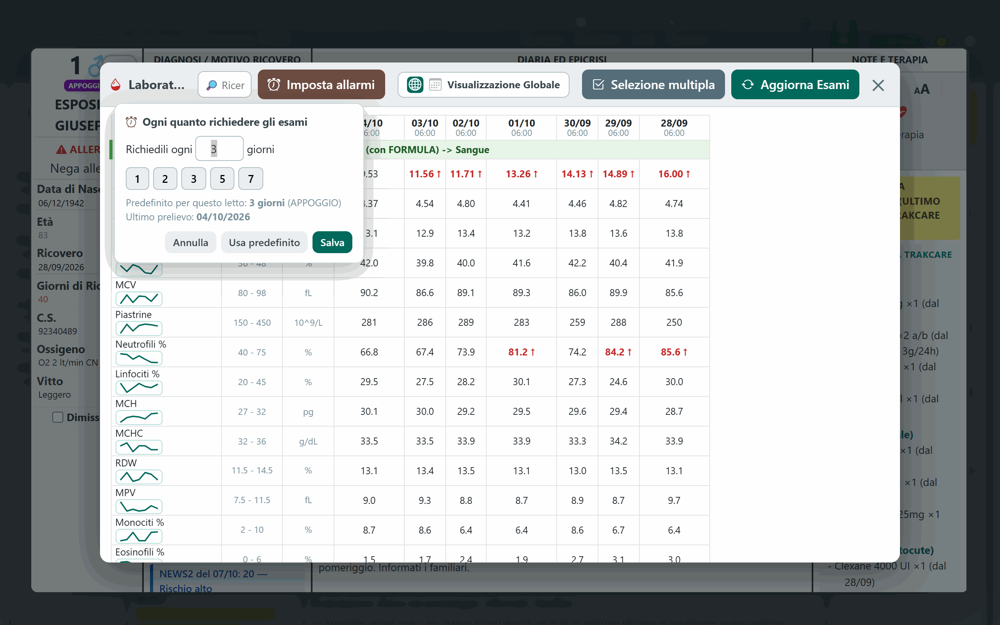
6. Le scale di valutazione
6.1 Aprire una scala
Le scale sono una calcolatrice di punteggi clinici (CHA₂DS₂-VASc, HAS-BLED, Wells, qSOFA…), con il risultato che si può mettere nella scheda.
- Apri la scheda in modifica e premi «Scale»: si apre l'elenco delle scale.
- Cerca la scala per nome, oppure scorri l'elenco diviso per argomento.
- Tocca la scala che ti serve: si apre con le sue domande.
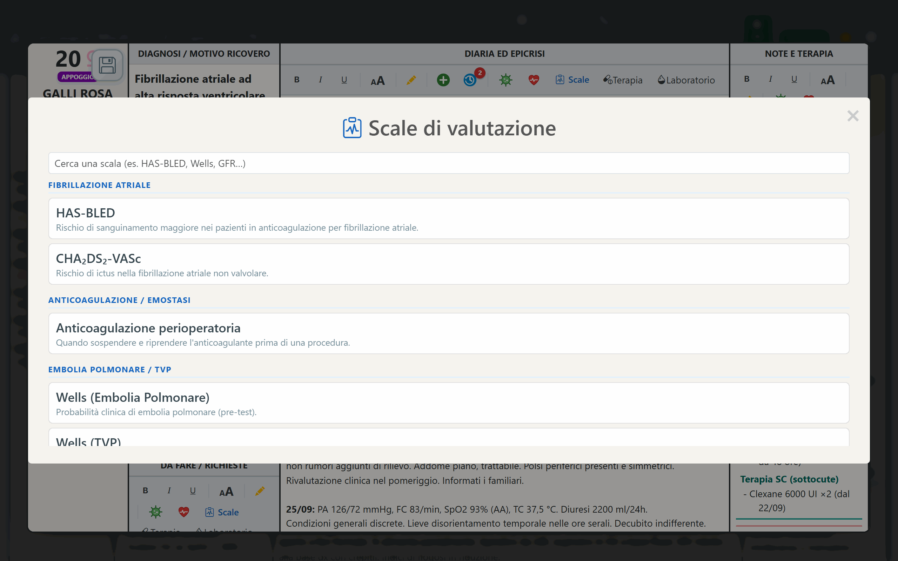
6.2 Compilare e mettere il punteggio nella scheda
Il punteggio si calcola mentre scegli le risposte, e con un pulsante finisce nella scheda del paziente.
- Rispondi a ogni voce con i pulsanti («No», «Sì +1»…): il punteggio cambia a ogni risposta.
- Leggi in fondo il punteggio e il suo significato.
- Premi «Inserisci in consegna»: nella scheda compare un riquadro azzurro con scala, data e risultato.
«Quando usare», «Perché usare» e «Insidie e note» spiegano a cosa serve la scala e dove può sbagliare.
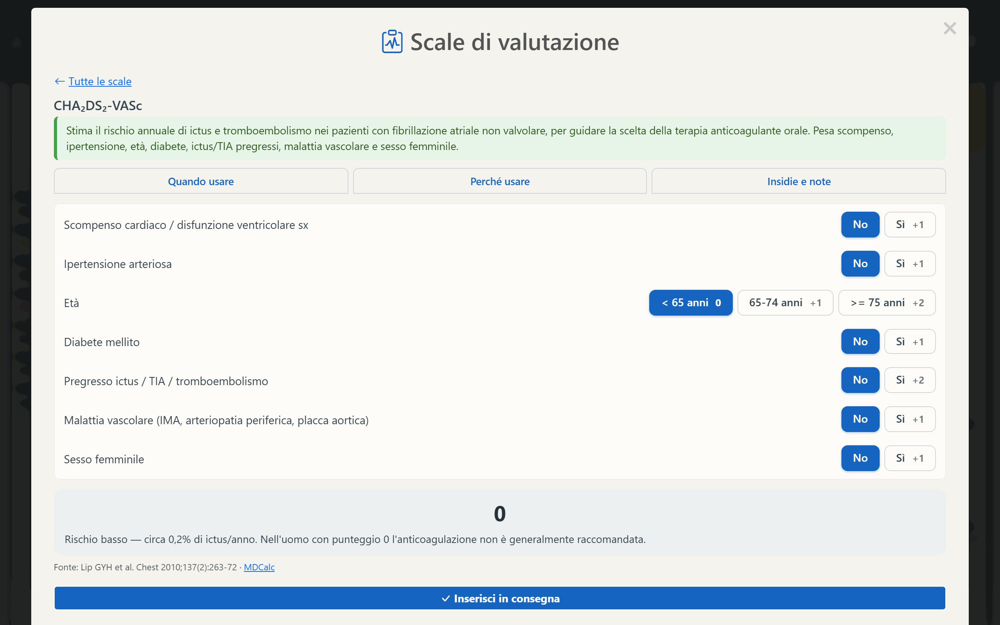
7. La mail di dimissione
7.1 Inviare la mail delle dimissioni
La mail manda a chi organizza i letti l'elenco delle dimissioni previste per domani, preparato dalle schede.
- Apri il menu «Letti» e scegli «Invia mail dimissioni».
- Controlla i destinatari e l'oggetto.
- Spunta i pazienti da includere: quelli con la data gialla sono segnati «Dimissibile» (2.9).
- Rileggi l'anteprima, perché quello che vedi è quello che parte. Premi «Invia» e conferma: la mail parte.
Attenzione: la mail contiene nomi di pazienti. Controlla bene i destinatari prima di inviare.
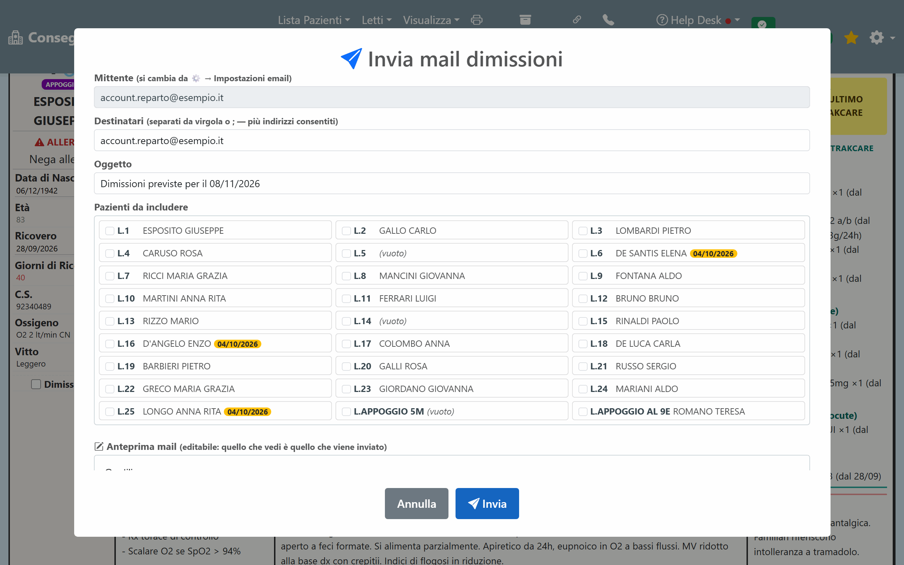
7.2 «Impostazioni email» e «Autorizza Google»
Qui si decide da quale casella parte la mail. Si fa una volta sola e vale per tutti i PC. Lo fa solo un amministratore (12.6): gli altri vedono la voce col lucchetto 🔒, e il clic dice con quale account entrare.
- Rotellina → «Impostazioni email».
- Scrivi l'indirizzo della casella Google del reparto e premi «Salva».
- Se in alto compare il pulsante giallo «Autorizza Google», premilo ed entra con quella casella: da allora la mail parte da lì.
Attenzione: usa solo una casella del reparto, perché una copia di ogni mail resta nella sua posta inviata.
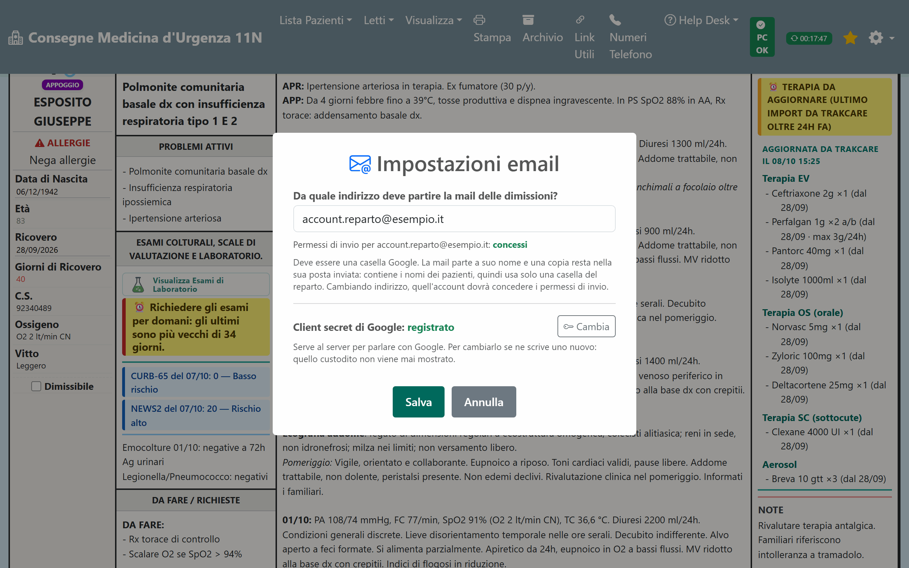
8. Numeri Telefono
8.1 Cercare un numero e chiamare
«Numeri Telefono» è la rubrica dei numeri dell'ospedale, dentro le consegne. È la stessa per tutto il reparto.
- Premi «Numeri Telefono» nella barra in alto: la rubrica si apre a destra.
- Scrivi nella ricerca un nome o un numero, oppure tocca una categoria: l'elenco si restringe subito.
- «A – Z» mostra le iniziali, e «Mostra Tutti» torna all'elenco intero.
- Dal telefono tocca il numero: parte la chiamata.
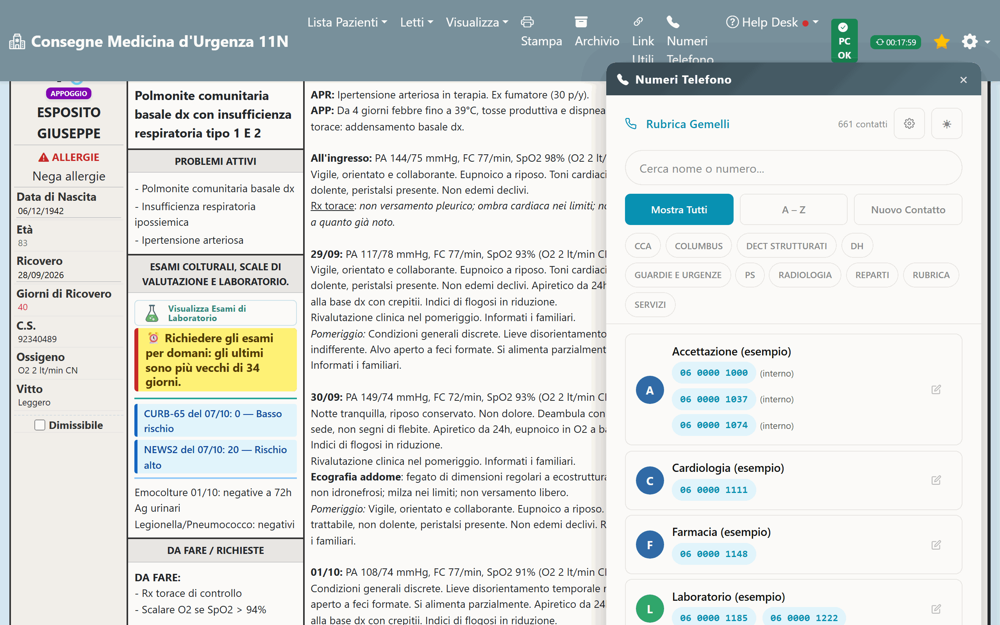
8.2 Aggiungere, modificare, eliminare un contatto
La rubrica è di tutto il reparto: un contatto che aggiungi o correggi lo vedono subito tutti.
- Premi «Nuovo Contatto», oppure la matita accanto a un contatto: si apre la sua scheda.
- Scrivi nome, categoria e numeri; con «+ Aggiungi numero» ne metti più di uno, ognuno con una nota.
- Premi «Salva»: il contatto entra nell'elenco. Per eliminarlo apri il contatto e premi «Elimina».
Attenzione: se un collega ha cambiato lo stesso contatto nel frattempo, il programma te lo dice e non salva.
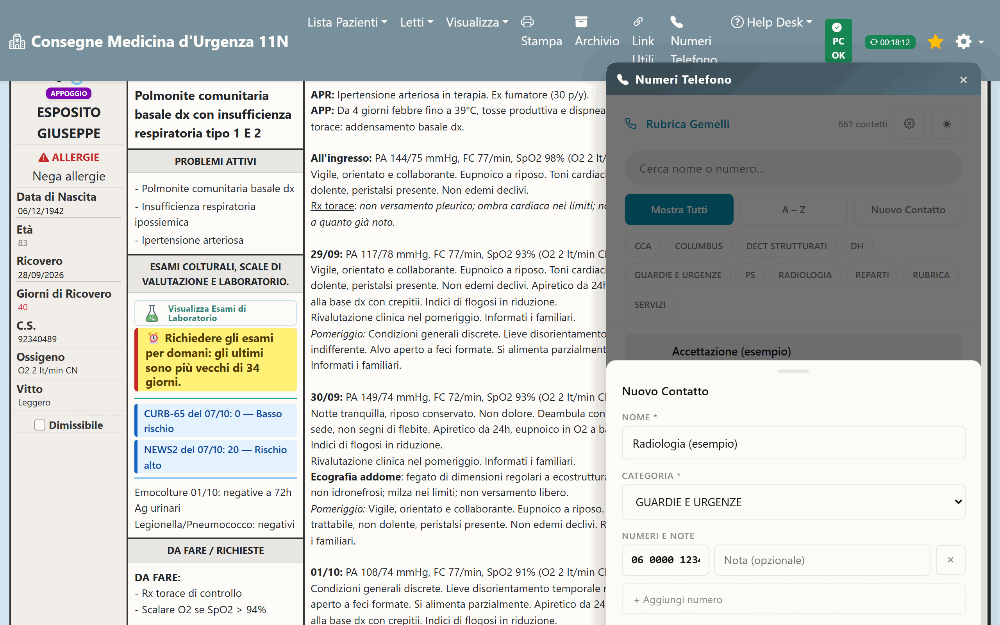
8.3 Le categorie e l'esportazione
Le categorie raggruppano i contatti (reparti, servizi…); l'esportazione fa una copia dell'elenco in un file.
- Premi la rotellina della rubrica e scegli «Gestione categorie».
- Cambia un nome, trascina per riordinare, oppure aggiungine una in «Nuova categoria».
- Premi «Salva modifiche»: le categorie cambiano per tutti.
- «Esporta tutto in CSV» scarica l'elenco in un file che si apre con Excel.
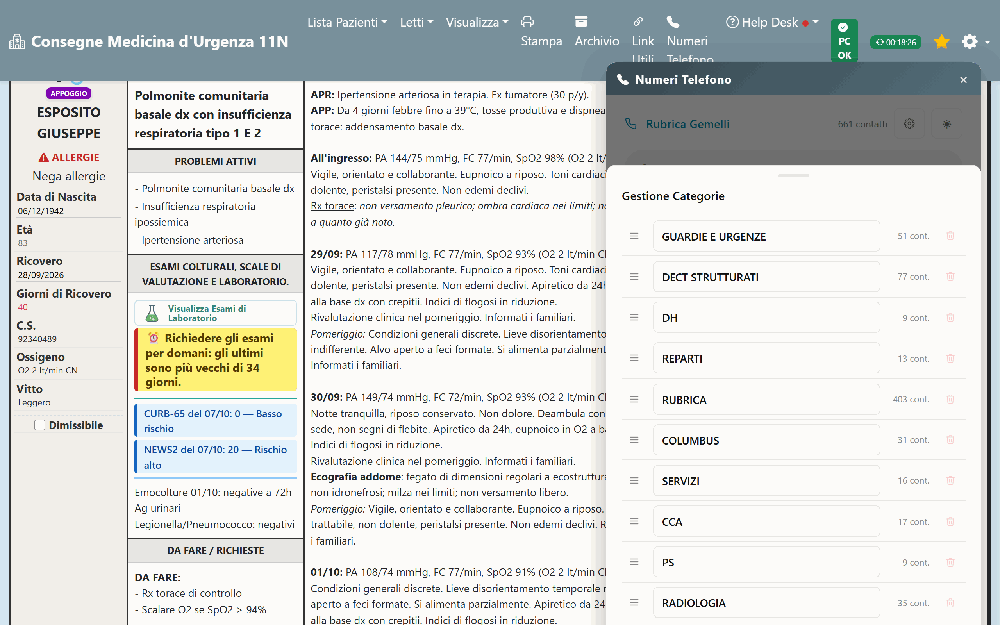
8.4 Il tema chiaro o scuro
Cambia i colori della rubrica, per esempio per leggerla di notte sul telefono senza abbagliare.
- Nella rubrica premi il sole (o la luna), in alto a destra: i colori cambiano subito.
- La scelta resta su quel dispositivo, e gli altri non cambiano.
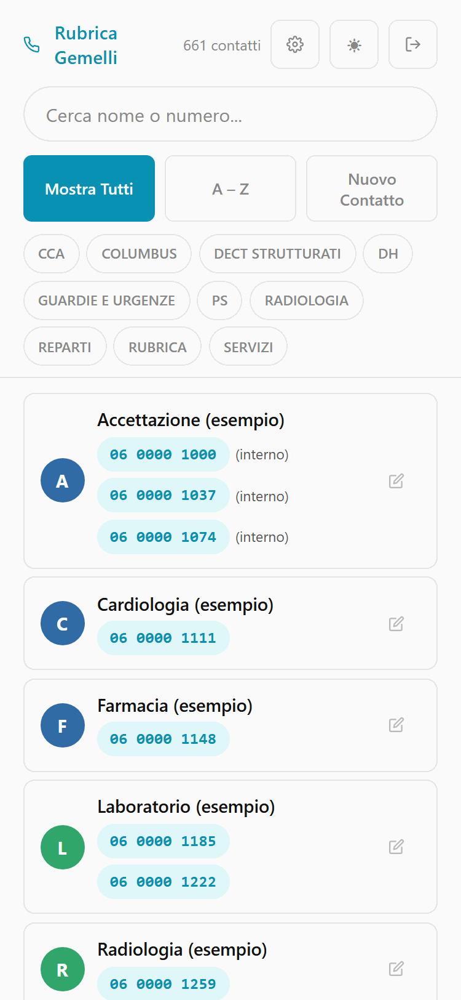
8.5 La rubrica dal telefono
Dal telefono si può aprire solo la rubrica, senza le consegne: è comoda per chiamare in giro per l'ospedale.
- Apri l'icona «Numeri Telefono» sul telefono (8.6).
- La prima volta premi «Accedi con Google» con l'account del reparto: la rubrica si apre a tutto schermo.
- Per uscire premi l'icona con la freccia, in alto a destra.
Attenzione: uscendo dalla rubrica esci anche dalle consegne su quel telefono.
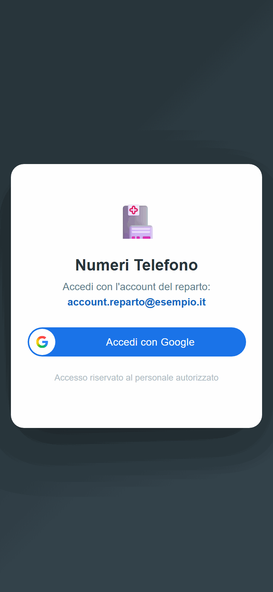
8.6 Installare l'icona «Numeri Telefono»
Mette sul telefono un'icona che apre subito la rubrica, come un'app.
- Apri con il telefono l'indirizzo delle consegne seguito da ?rubrica=1, ed entra.
- Su iPhone (Safari) premi Condividi, poi «Aggiungi alla schermata Home».
- Su Android (Chrome) premi i tre puntini, poi «Installa app» o «Aggiungi a schermata Home».
- Sulla schermata del telefono compare l'icona «Numeri Telefono»: toccala per aprire la rubrica.
9. Stampare
9.1 «Stampa»: le consegne su carta
«Stampa» mette su carta le schede di tutti i letti, o solo di alcune tipologie, per esempio per il giro visita.
- Premi «Stampa» nella barra in alto: si aprono le scelte della stampa.
- Scegli la dimensione (100%, 90%, 80%…) e le tipologie da stampare.
- Lascia spuntato «Non stampare letti vuoti»; «Includi scheda NOTE» aggiunge la colonna delle note.
- Premi «Stampa»: si apre una pagina nuova con l'anteprima (9.2).
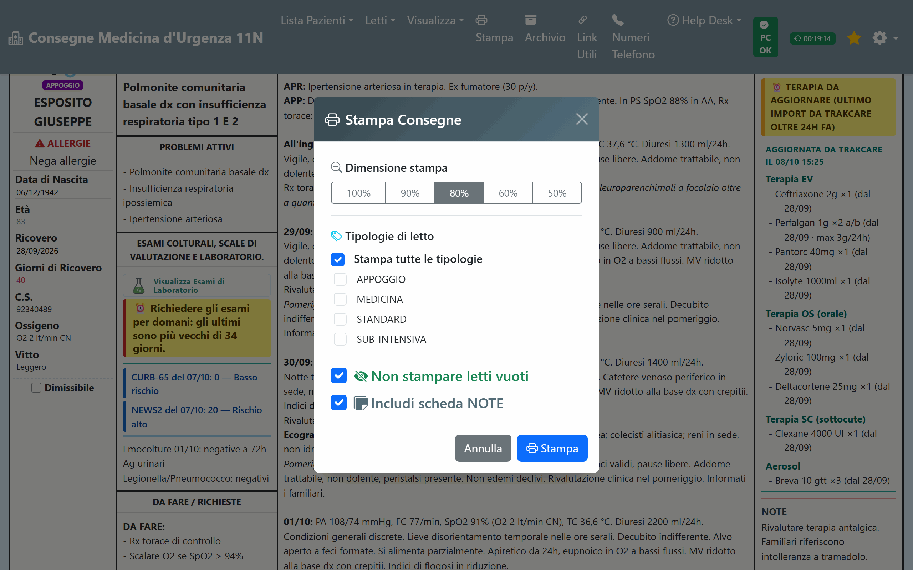
9.2 L'anteprima e il PDF
Nell'anteprima vedi le schede come verranno sulla carta, prima di stampare o di salvare un PDF.
- Premi «Stampa / Salva PDF», in alto a destra: si apre la finestra di stampa del browser.
- Scegli la stampante, oppure «Salva come PDF» per avere un file.
- «Torna all'app» chiude l'anteprima e ti riporta alle consegne.
Attenzione: un foglio stampato contiene dati dei pazienti: non lasciarlo in giro.
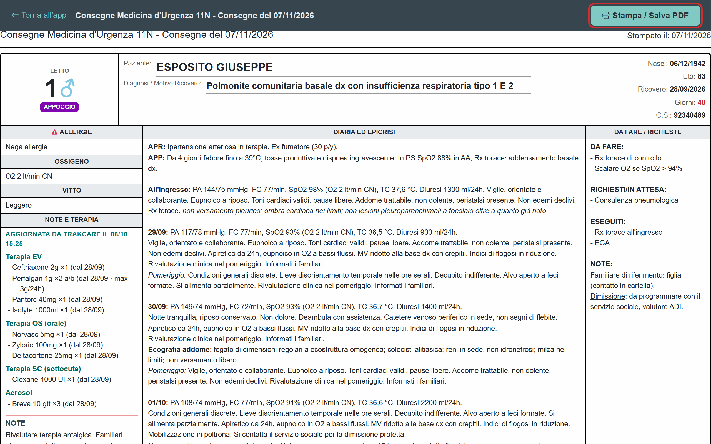
9.3 «Stampa Check List Odierna»
La check list è l'elenco delle cose da fare oggi, letto per letto, da tenere in tasca durante il turno.
- Apri il menu «Letti» e scegli «Stampa Check List Odierna».
- Scegli «Verticale» o «Orizzontale».
- Scegli «Tutti», una tipologia oppure i singoli letti, e premi «Stampa»: si apre la pagina da stampare.
Attenzione: se compare «Popup bloccato», consenti le finestre a comparsa per questo sito nel browser e riprova.
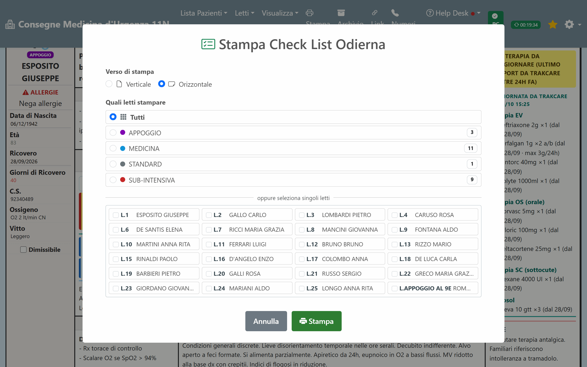
10. Archivio e backup
10.1 «Archivio»: le consegne dei giorni passati
Il programma copia da solo tutte le consegne una volta all'ora. Le copie si rileggono e si stampano dall'«Archivio».
- Premi «Archivio» nella barra in alto: si apre il calendario.
- I giorni verdi hanno delle copie: tocca il giorno che ti serve.
- Scegli l'ora della copia: si apre la stampa delle consegne di quel momento.
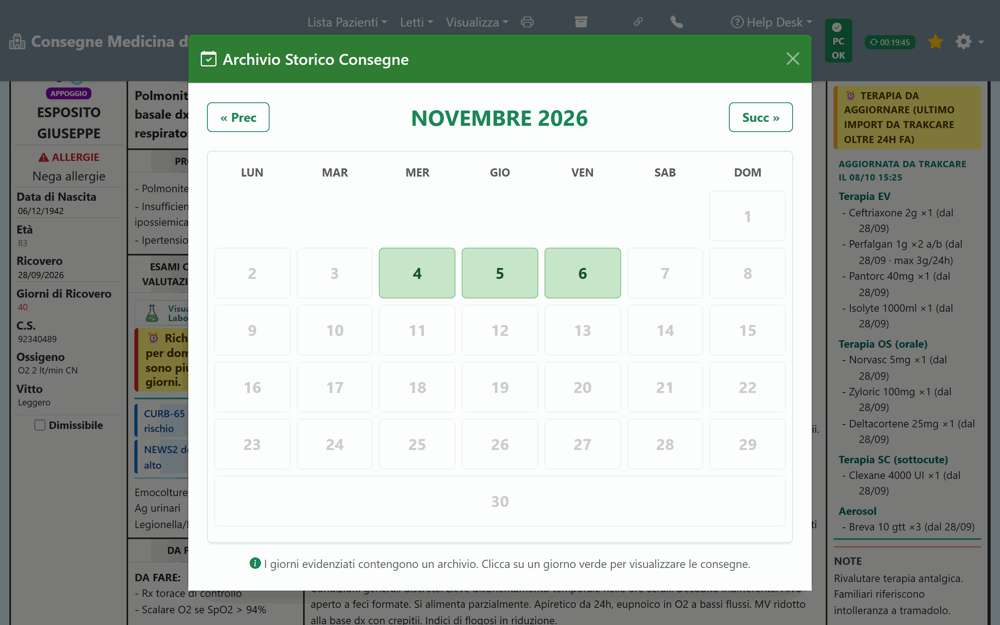
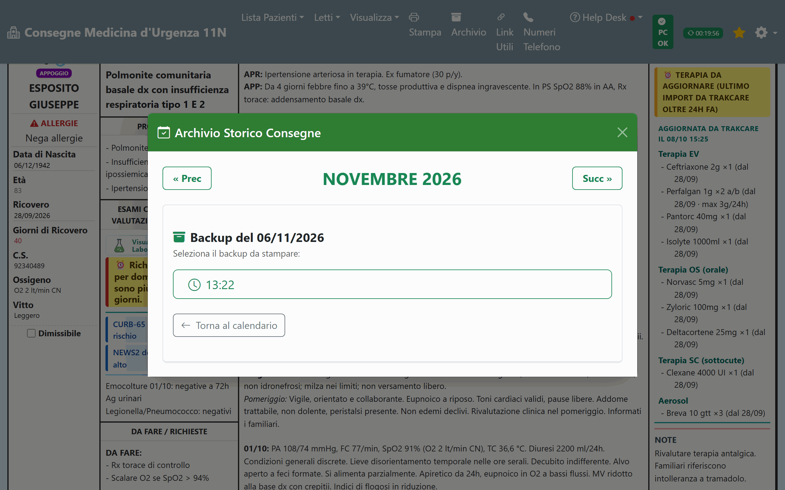
10.2 «Esegui Backup Manuale»
Fa subito una copia in più di tutte le consegne, per esempio prima di un grosso cambiamento. La usa solo un amministratore (12.6): gli altri vedono la voce col lucchetto 🔒, e il clic dice con quale account entrare. La copia automatica di ogni ora la fa comunque ogni PC.
- Rotellina → «Esegui Backup Manuale».
- Premi «Esegui Backup»: la copia compare nell'«Archivio» con l'ora di adesso.
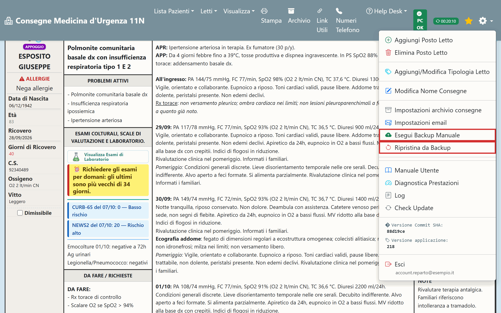
10.3 «Ripristina da Backup»
Rimette le schede com'erano in una copia passata, tutte oppure solo alcuni letti. Serve dopo un errore grosso. La usa solo un amministratore (12.6): gli altri vedono la voce col lucchetto 🔒, e il clic dice con quale account entrare.
- Rotellina → «Ripristina da Backup».
- Scegli il giorno, poi l'ora della copia: compare l'elenco dei letti.
- Spunta i letti da rimettere, oppure «Ripristina tutto».
- Premi «Ripristina selezionati» e conferma: le schede tornano com'erano nella copia.
Attenzione: i letti ripristinati perdono quello che è stato scritto dopo quella copia. Fai prima un backup manuale (10.2). Riservare backup e ripristino agli amministratori non è una serratura: chi entra nelle consegne può comunque scrivere nelle schede, come sempre.
10.4 «Impostazioni archivio consegne»
Decide per quanti giorni si conservano le copie dell'archivio. Lo cambia solo un amministratore (12.6); gli altri vedono la voce col lucchetto 🔒.
- Rotellina → «Impostazioni archivio consegne».
- Scrivi i giorni di conservazione e premi «Salva»: la regola vale da subito.
Attenzione: le copie più vecchie di quei giorni si cancellano da sole e non si recuperano.
11. Help Desk
11.1 «Apri un ticket»
L'Help Desk serve a segnalare un problema o a chiedere una funzione nuova a chi cura il programma. Le risposte arrivano qui.
- Premi «Help Desk» nella barra in alto, poi «Apri un ticket».
- Scegli «Segnala un problema» oppure «Chiedi una funzione»: si apre il modulo da compilare (11.2).
Per una domanda su come si usa l'app c'è «Leggi la guida», che apre questo manuale (12.5). Il pallino rosso su «Help Desk» vuol dire che l'assistenza ti ha risposto.
11.2 Descrivere la segnalazione
Una descrizione chiara fa risolvere prima il problema: che cosa stavi facendo e che cosa è successo.
Non scrivere nomi, cognomi, date di nascita, codici fiscali o altri dati di pazienti.
- In «In poche parole» scrivi il titolo.
- Rispondi alle domande, almeno a quella obbligatoria: per un problema «Che cosa è successo invece?», per una funzione «Che problema vuoi risolvere?».
- Premi «Avanti»: si passa a chi può vederla (11.3).
Se il testo somiglia a un dato personale il modulo te lo segnala. Se chiudi a metà, la bozza resta su questo PC per 24 ore.
11.3 Chi può vederla e l'invio
Prima di inviare scegli chi vede la segnalazione e la rileggi tutta.
- Scegli «Solo chi l'ha aperta» oppure «Tutti gli utenti di Consegne, …», con il nome del reparto.
- Se vuoi essere richiamato lascia nome e telefono o mail (facoltativo), poi premi «Avanti».
- In «Rivedi e invia» controlla tutto e premi «Invia»: la segnalazione parte e la ritrovi in «Le mie segnalazioni».
Attenzione: l'account è del reparto, quindi «solo chi l'ha aperta» vuol dire chiunque entri con quell'account. Con la segnalazione partono anche alcuni dati tecnici (versione, browser, schermo, ultimi errori dell'app: solo tipo e riga), elencati prima dell'invio.
11.4 «Le mie segnalazioni»
Qui segui le tue segnalazioni e quelle condivise dai colleghi, con il loro stato: «Ricevuta», «In lavorazione», «Serve una tua risposta», «Risolta: confermi?», «Chiusa».
- Apri una segnalazione per leggerla e rispondere. Se è «Serve una tua risposta», rispondi entro 14 giorni, altrimenti si chiude «senza risposta».
- Su una risolta premi «Sì, è risolta» o «No, non è risolta»; senza risposta, dopo 7 giorni si chiude da sola.
- «Ritira» c'è finché è «Ricevuta». Una chiusa si riapre scrivendo entro 30 giorni; se è chiusa come doppione o non valida, aprine una nuova.
- Su una tua condivisa c'è «Rendila privata»; su quelle dei colleghi «Serve anche a me», che dice all'assistenza che il problema tocca anche te.
11.5 Senza rete, o con il servizio spento
Una segnalazione non si perde se la rete manca: aspetta in coda e parte da sola.
- Senza rete la segnalazione resta in coda e «parte appena torna la rete»; «Riprova adesso» la manda subito.
- Una segnalazione in coda che non parte entro 24 ore si cancella.
- Dopo troppe segnalazioni in un giorno compare «riprova più tardi», e la coda riprova il giorno dopo.
- Se compare «Il servizio di assistenza non è attivo per questa installazione», per ora l'Help Desk è spento.
- «Esci» si ferma se c'è una segnalazione non inviata: inviala o eliminala da Help Desk, poi esci.
12. Altre voci del menu
12.1 «Link Utili»
«Link Utili» raccoglie i collegamenti che il reparto usa spesso (TrakCare, turni, tabelle…), uguali su tutti i PC.
- Premi «Link Utili» nella barra in alto e tocca un collegamento: si apre in una pagina nuova.
- Per aggiungerne uno scrivi nome e indirizzo in «Aggiungi link» e premi «Aggiungi»: compare nell'elenco.
- La matita accanto a un collegamento lo modifica.
12.2 «Check Update»
«Check Update» chiede subito le impostazioni del reparto, invece di aspettare il prossimo aggiornamento, che arriva entro un'ora.
- Rotellina → «Check Update».
- Il programma dice se è cambiato qualcosa, per esempio una funzione accesa o spenta, e la applica subito.
12.3 «PC OK», l'ora e «Diagnostica Prestazioni»
In alto a destra due spie dicono se il PC lavora bene e quando ha ricevuto l'ultimo aggiornamento.
- «PC OK» verde vuol dire che il PC lavora normalmente; l'ora accanto è l'ultimo aggiornamento ricevuto.
- Se il PC è lento la spia diventa «PC LENTO» o «Polling ON» (13.4).
- Rotellina → «Diagnostica Prestazioni» fa un controllo del PC e dice che cosa fare; prima prova a riavviare il browser.
- Rotellina → «Log» mostra l'elenco degli eventi, utile all'assistenza.
12.4 «Esci»
«Esci» scollega il programma da questo dispositivo; gli altri PC restano collegati. Serve per esempio su un telefono personale.
- Chiudi le schede aperte in modifica.
- Rotellina → «Esci», poi conferma con «Esci»: compare la schermata di accesso.
Attenzione: per rientrare serve di nuovo «Accedi con Google». Sui PC del reparto, di solito, non si esce mai.
12.5 «Manuale Utente»
Apre questo manuale senza lasciare le consegne. Mostra solo le funzioni attive nel tuo reparto.
- Rotellina → «Manuale Utente», oppure «Help Desk» → «Manuale Utente» o «Leggi la guida»: dal computer si apre in una finestra.
- La finestra si sposta dalla barra in alto e si allarga dall'angolo in basso a destra; la pagina sotto resta usabile, e «×» la chiude.
- A sinistra c'è il menu dei capitoli: «+» mostra i capitoletti e un clic porta alla sezione. La freccia « in alto lo chiude, «☰ Indice» lo riapre.
- In «Cerca nel manuale», la barra in alto, scrivi una o più parole (maiuscole e accenti non contano) e scegli il capitoletto dall'elenco. «/» o Ctrl+F portano nella barra, Esc la svuota.
- Ogni immagine si ingrandisce con un clic (sul telefono con un tocco, e lì si allarga con due dita); la chiudono Esc, la × o un clic fuori.
Dal telefono si apre in una nuova scheda. In alto, «Scarica il PDF» lo salva; se nel reparto qualche funzione è spenta c'è invece «Stampa o salva in PDF», con le sole funzioni attive.
12.6 «Account abilitati»
È l'elenco degli account Google che possono entrare e vedere le consegne, ognuno col suo nome. Tutti lo possono vedere; lo cambiano solo gli amministratori, che usano anche le impostazioni della mail e del backup (per gli altri quelle voci hanno il lucchetto 🔒 e dicono con quale account entrare).
- Rotellina → «Account abilitati». In cima ci sono gli amministratori, con la stella accesa (★); gli account col lucchetto (🔒) non si tolgono mai.
- Un amministratore scrive nome e indirizzo Gmail del collega in «Aggiungi un account Google» e preme «Aggiungi»: il collega può entrare da subito, dal suo dispositivo.
- Con la matita si corregge il nome, e l'indirizzo se è scritto male; con il pulsante rosso si toglie un account, dopo una conferma. Chi viene tolto esce al prossimo avvio dell'app.
Attenzione: gli amministratori si nominano solo dalla centrale. Se non sei amministratore, per un cambio rivolgiti a uno di loro.
13. Aggiornamenti e problemi comuni
13.1 Il pulsante «Update»
Il pulsante rosso «Update» compare in alto quando c'è una versione nuova del programma.
- Chiudi le schede aperte in modifica.
- Premi «Update»: la pagina si ricarica con la versione nuova.
Ogni notte alle 04:00 i PC si ricaricano da soli. Se dopo un aggiornamento qualcosa sembra strano, premi F5.
13.2 «L'applicazione non ha ricevuto la sua configurazione»
Questo messaggio vuol dire che la pagina si è caricata a metà, di solito nei minuti di un aggiornamento.
- Premi «Ricarica»: la pagina riparte e di solito il messaggio sparisce.
- Se ricompare, aspetta qualche minuto e riprova.
- «Indirizzo non riconosciuto» vuol dire che hai aperto un indirizzo sbagliato: usa il segnalibro delle consegne.
- Se il messaggio resta, apri un ticket (capitolo 11) o avvisa chi gestisce il programma.
13.3 «Funzione non attiva per questo reparto»
Alcune funzioni si accendono o si spengono per reparto, e questo manuale mostra solo quelle accese.
- Se una funzione è spenta il suo pulsante sparisce; se ci arrivi lo stesso, compare questo avviso.
- Le schede e i dati non si toccano: tornano come prima quando la funzione si riaccende.
- Dopo un cambio, «Check Update» (12.2) aggiorna subito il PC.
13.4 «PC LENTO» e la modalità emergenza
Se la rete del PC va a scatti, il programma passa da solo a un modo più prudente, e lo dice con la spia in alto.
- Il tuo lavoro si salva normalmente e tutto funziona: stampa, archivio, letti, backup.
- Le modifiche degli altri PC possono arrivare con qualche secondo di ritardo (fino a 30).
- Quando la rete torna normale, la modalità si spegne da sola.
- Se dura a lungo, riavvia il browser e poi il PC.
13.5 Di nuovo la schermata di accesso
Se compare «Accedi con Google» su un PC che era collegato, il collegamento è scaduto: basta rientrare.
- Succede su ogni dispositivo non usato da 30 giorni (un telefono, un PC rimasto spento): per sicurezza il collegamento scade da solo. I PC del reparto sempre accesi restano collegati.
- Premi «Accedi con Google» con il tuo account abilitato o con quello del reparto: le consegne tornano come prima.
- Se sotto il pulsante c'è scritto che l'account «non è più abilitato», è stato tolto dall'elenco: chiedi a un amministratore (12.6).
- Nulla di quello che era salvato si perde.
13.6 «Esci» non parte
«Esci» si ferma quando uscendo si perderebbe del lavoro, e dice perché.
- «Salvataggio in corso»: c'è una scheda aperta o un salvataggio non finito. Chiudi la scheda, aspetta qualche secondo e riprova.
- «Rubrica: lavoro non salvato»: in «Numeri Telefono» c'è un contatto non salvato; salvalo o annullalo, poi esci.
- «Segnalazione non inviata»: in Help Desk c'è una bozza o una segnalazione in coda; inviala o eliminala, poi esci.
14. Indice delle funzioni e glossario
Indice delle funzioni
- Accedi con Google
- Account abilitati
- Aggiungi Posto Letto
- Allergie
- Aggiungi data odierna
- Archivio
- Autorizza Google
- Backup manuale
- Cambia Tipologia
- Check Update
- Check List Odierna
- Codice sanitario (C.S.)
- Data di nascita ed età
- Data di ricovero
- Diagnostica Prestazioni
- Dimetti / Svuota Letto
- Dimissibile
- Elimina Posto Letto
- Esci
- Esami di laboratorio
- Formattazione del testo
- Help Desk
- Imposta allarmi
- Impostazioni email
- Impostazioni archivio
- Importa terapia
- Isolamento
- Link Utili
- Lista Pazienti
- Log
- Mail di dimissione
- Manuale Utente
- Modifica Nome Consegne
- Nome del paziente
- Numeri Telefono
- Ordina i letti
- Ossigeno
- Problemi Attivi
- Recupera dati
- Rianimazione
- Ripristina da Backup
- Salva ora
- Scale di valutazione
- Sesso del paziente
- Sposta / Scambia
- Stampa
- Tipologie dei letti
- Update
- Versione applicazione
- Vitto
Glossario
- Scheda in modifica
- La scheda aperta a tutto schermo con la matita, l'unico modo per scriverci.
- Tipologia
- Il tipo di letto (per esempio Medicina, Appoggio, Sub-intensiva), con il suo colore.
- Segnalibro (TrakCare)
- Il pulsante nella barra dei preferiti del browser che legge terapia o esami da TrakCare.
- Backup
- Una copia di tutte le consegne in un certo momento; ne viene fatta una ogni ora.
- Ticket
- Una segnalazione all'assistenza, aperta da Help Desk.
Hai un problema?
Help Desk → «Apri un ticket» → «Segnala un problema». Scrivi che cosa stavi facendo e che cosa è successo, e indica la versione (1.7).
Hai un problema?
Avvisa chi gestisce il programma nel reparto: digli che cosa stavi facendo, che cosa è successo e la versione (1.7).